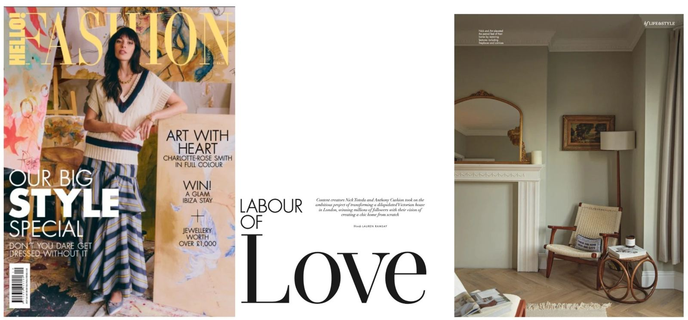
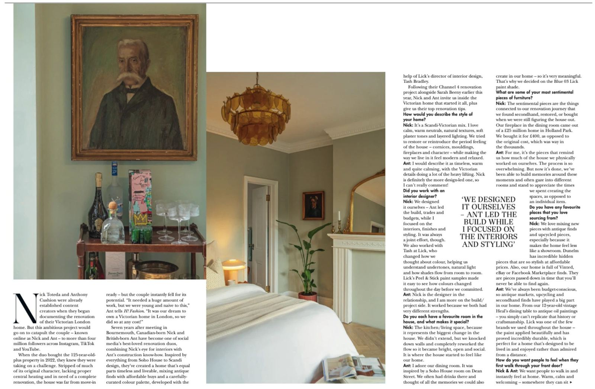
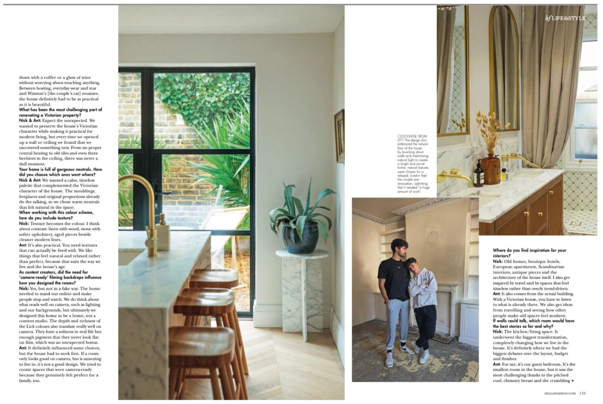
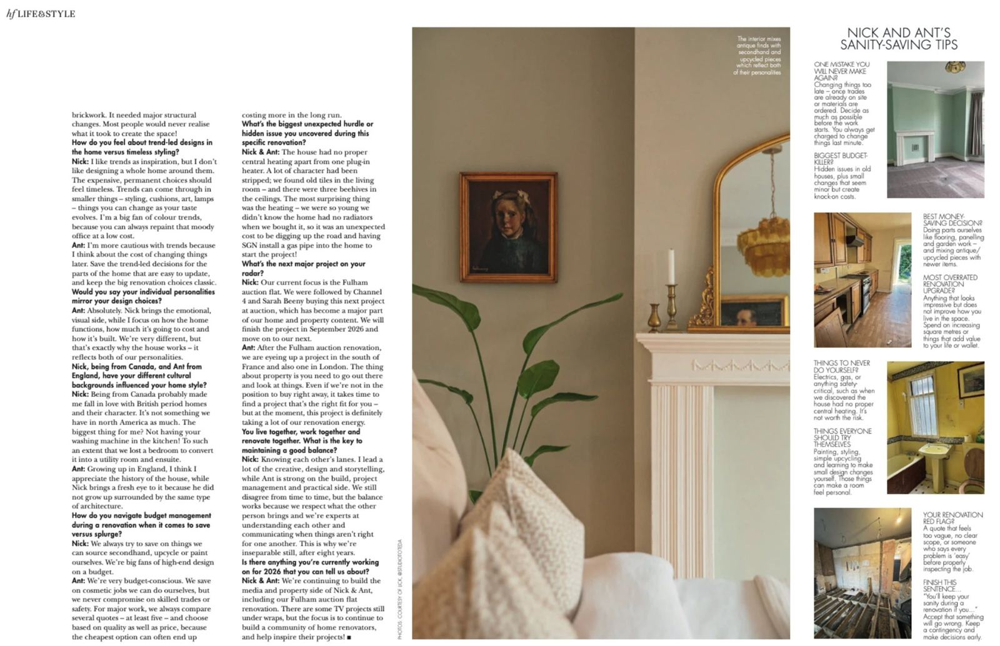
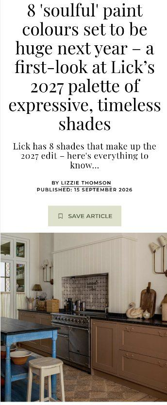
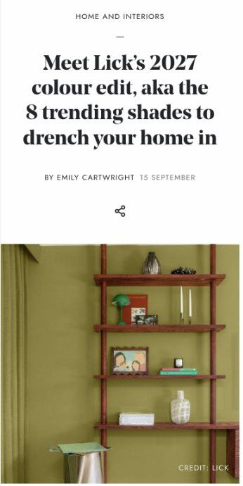
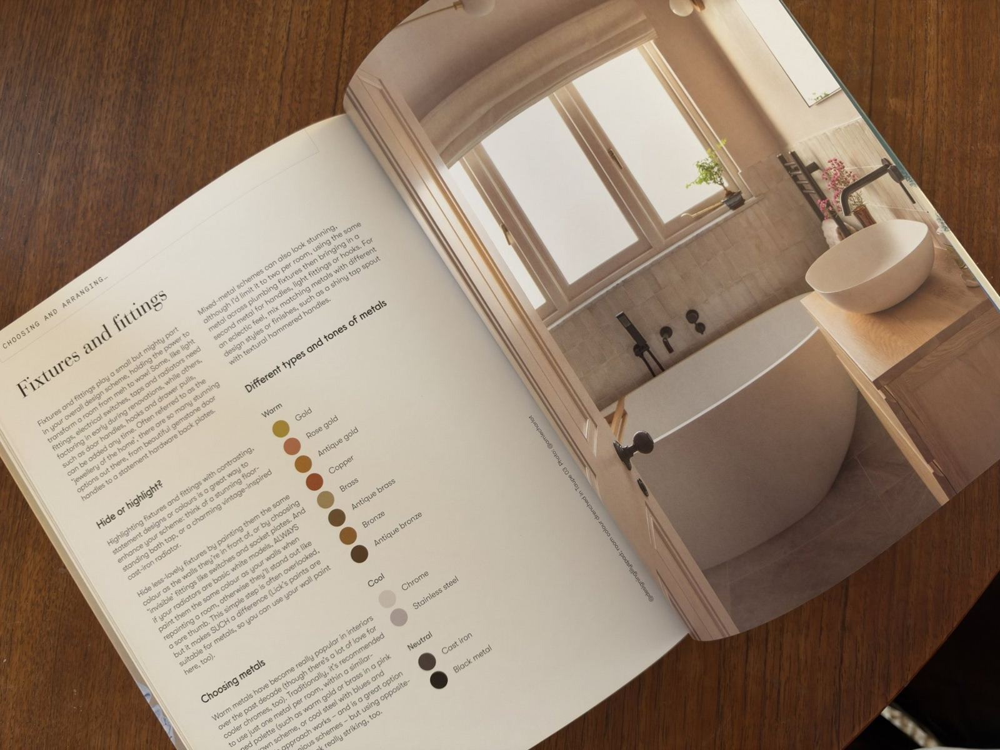
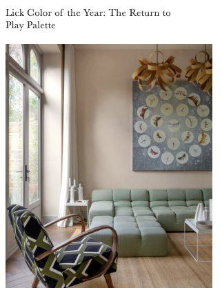
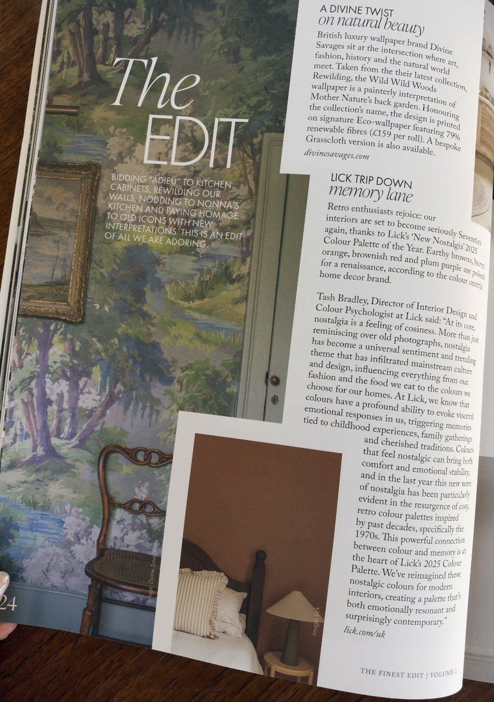
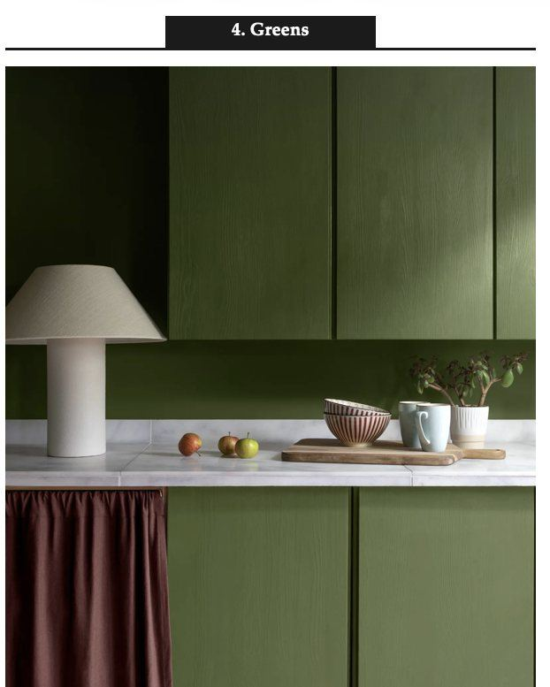

IN PRINT · HELLO! FASHION · OCTOBER 2026
Labour of Love
Photography of Nick and Ant's London home




Alongside my social content, I shoot editorial-standard photography: considered, high-resolution stills made to sit in print and online press as comfortably as on the feed. For brands, that means imagery ready to support press features and PR, with your product shown in a real, characterful home.
Photography of Nick and Ant's London home





Online · Country Living · September 2026A first look at Lick's 2027 palette, featuring my kitchen photography.

Online · Stylist · September 2026The 8 trending shades to drench your home in.

In print · BookFeatured in the 'Fixtures and fittings' chapter.

Online · Homes & GardensLick's 2026 colour edit, reimagining the primary palette.

In print · The Finest Edit · Volume 1Lick's 'New Nostalgia' 2025 palette, featured in The Edit.

Online · Ideal HomeOlive kitchen shot and styled for Lick.